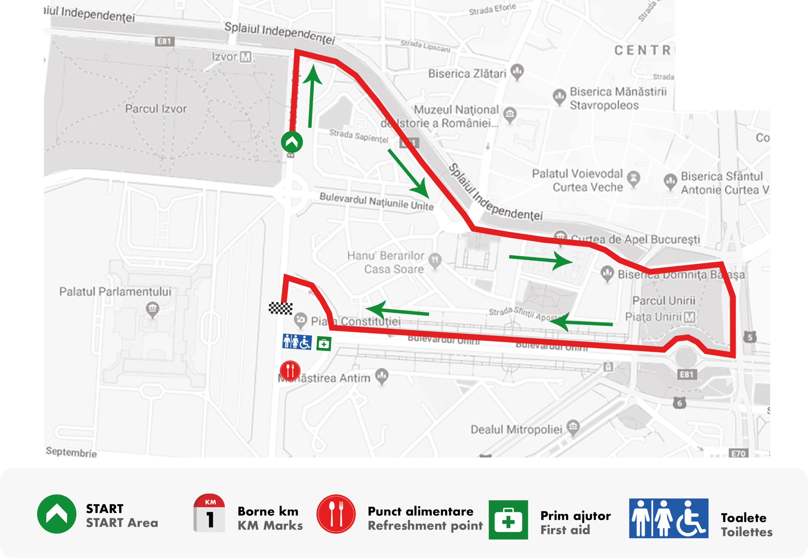
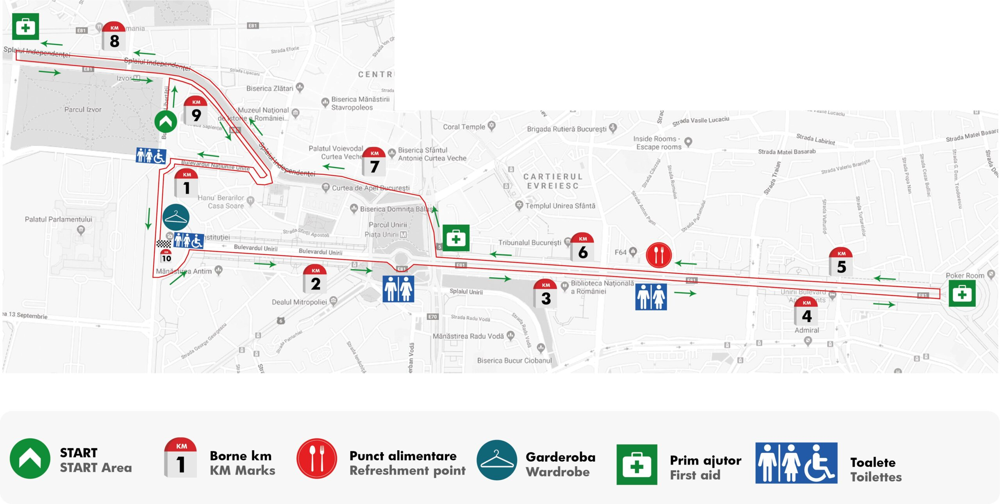
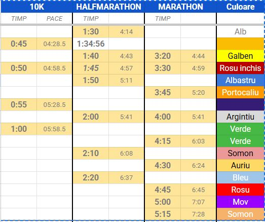

Un plan bun îți lasă energie pentru lucrurile care contează: orașul, oamenii
și bucuria de a alerga.
Ridicare kit
Kitul se poate ridica joi (8.10) și vineri (9.10), în Piața Constituției,
între orele 16:00 și 20:00, pe baza scrisorii de confirmare a înscrierii, care va conține un cod
QR, și a unui act de identitate. Kitul se mai poate ridica sâmbătă și duminică, însă aceste zile
sunt rezervate de regulă persoanelor care nu au domiciliul în București.
TIP 💡
Este posibil ca tricoul oficial să fie ridicat de la alt stand. După
ridicarea kitului, folosește numărul de concurs (BIB) pentru a ridica tricoul de la standul
separat.
Echipament
Nimic nou în ziua cursei: aleargă cel puțin o dată în echipamentul ales.
Ia un mic dejun ușor, familiar și testat cu 2-3 ore înainte de start.
Pentru cursele mai lungi, alimentația începe cu minimum o zi înainte.
Carbohidrații sunt recomandați.
Ai grijă la iritații: cremele anti-frecare și plasturii pot face
diferența.
Program curse
Sâmbătă10 km și 2.5 km
individual
08:45 Wheelchairs 10 km> 09:00 proba de 10 km individual 11:45
Wheelchairs FunRace 2.5 km 12:00 proba de 2.5 km
Duminică42 km individual și
ștafetă, plus 21 km
09:00 Start probele de 42 km și 21 km
ATENȚIE
La intrarea în Piața Constituției, mai ales la traversarea
bulevardului, ține cont că probele Wheelchairs pornesc cu 15 minute mai devreme.
Traseul curselor
Zona evenimentului are garderobă și depozitare pentru obiectele
personale. Startul are loc pe Bd. Libertății, în dreptul Parcului Izvor, iar sosirea este în
Piața Constituției.
2.5 km · timp limită: 60 minute

10 km · timp limită: 90 minute

21 km · timp limită: 3 ore42 km · timp limită: 6 ore
TIP 💡
Timpul limită se măsoară între startul cursei și trecerea liniei
de sosire.
Cu excepția cursei de 2.5 km, există puncte de hidratare și
toalete.
Circulația este oprită, dar fii atent la pietoni sau curiosii rataciti 😁
Fotografii oficiali vor fi pe traseu; păstrează BIB-ul pentru
accesul la poze.
ATENȚIE
La 10 km, coridorul de start este împărțit în sectoare. Ai
acces doar în sectorul atribuit BIB-ului.
Dacă depășești timpul-limită, este posibil să nu fii inclus
în clasamentul oficial.
Important de știut
Vino cu transportul public: stația de metrou Izvor este cea mai
rapidă opțiune.
Sâmbătă, întâlnirea pentru poza de grup este la 08:45, în dreptul
scenei.
Pentru proba de 2.5 km, strângeți-vă în jurul orei 11:45, în dreptul
scenei.
+
02Rămâi în ritmul tău
În timpul cursei...
Ascultă-ți corpul, lasă aglomerația să treacă și păstrează-ți energia pentru
ultimii kilometri.
Ritmul cursei
Nu te așeza în prima linie: locurile sunt de regulă rezervate alergătorilor
de elită. Începe controlat. În primii 1-2 km aleargă puțin mai lent decât ritmul-țintă și nu
încerca să recuperezi imediat secundele pierdute la start.
Echipele de paceri
Pacerii sunt alergători experimentați care mențin un ritm constant pentru
un timp-țintă. Îi vei recunoaște după steagurile colorate. Stai alături de ei mai ales dacă este
prima cursă de acest gen.

TIP 💡
La cursele de 2.5 km și 10 km, probabil nu ai nevoie de geluri sau
batoane; un mic dejun suficient este de ajuns.
Punctele de hidratare
La cursele de 10 km, 21 km și maraton vei găsi puncte de hidratare la
fiecare 5 km. Pacerii încetinesc în aceste zone pentru a permite alimentarea. Aruncă paharele în
zona indicată.
⚠️ SIGURANȚĂ
Dacă apar amețeli, tulburări de vedere sau senzație de leșin, oprește
alergarea și mergi spre marginea traseului. Pentru dureri în piept, dificultăți de
respirație sau stare severă, OPRESTE-TE sI solicită imediat ajutorul echipelor medicale.
TIP 💡
Redu viteza progresiv în zona punctelor de hidratare și fii atent la
alergătorii din jur.
03Ultimul kilometru nu e
finalul
După cursă.
Treci linia de finish, respiră și bucură-te de rezultatul pe care l-ai
construit kilometru cu kilometru.
După trecerea liniei de sosire, îți poți afla poziția în clasament la